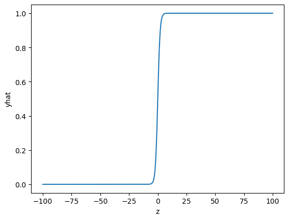

# Import the libraries we need for this lab
import torch.nn as nn
import torch
import matplotlib.pyplot as pltLogistic Regression
In this lab, you will review how to make a prediction in several different ways by using PyTorch.
Keywords
Training Two Parameter, Mini-Batch Gradient Decent, Training Two Parameter Mini-Batch Gradient Decent

Logistic Regression
Objective
- How to create a logistic regression object with the nn.Sequential model.
Table of Contents
In this lab, we will cover logistic regression using PyTorch.
Estimated Time Needed: 15 min
Preparation
We’ll need the following libraries:
Set the random seed:
# Set the random seed
torch.manual_seed(2)<torch._C.Generator at 0x7f3ff0b181b0>Logistic Function
Create a tensor ranging from -100 to 100:
z = torch.arange(-100, 100, 0.1).view(-1, 1)
print("The tensor: ", z)The tensor: tensor([[-100.0000],
[ -99.9000],
[ -99.8000],
...,
[ 99.7000],
[ 99.8000],
[ 99.9000]])Create a sigmoid object:
# Create sigmoid object
sig = nn.Sigmoid()Apply the element-wise function Sigmoid with the object:
# Use sigmoid object to calculate the
yhat = sig(z)Plot the results:
plt.plot(z.numpy(), yhat.numpy())
plt.xlabel('z')
plt.ylabel('yhat')Text(0, 0.5, 'yhat')
Apply the element-wise Sigmoid from the function module and plot the results:
yhat = torch.sigmoid(z)
plt.plot(z.numpy(), yhat.numpy())
Build a Logistic Regression with nn.Sequential
Create a 1x1 tensor where x represents one data sample with one dimension, and 2x1 tensor X represents two data samples of one dimension:
# Create x and X tensor
x = torch.tensor([[1.0]])
X = torch.tensor([[1.0], [100]])
print('x = ', x)
print('X = ', X)x = tensor([[1.]])
X = tensor([[ 1.],
[100.]])Create a logistic regression object with the nn.Sequential model with a one-dimensional input:
# Use sequential function to create model
model = nn.Sequential(nn.Linear(1, 1), nn.Sigmoid())The object is represented in the following diagram:

In this case, the parameters are randomly initialized. You can view them the following ways:
# Print the parameters
print("list(model.parameters()):\n ", list(model.parameters()))
print("\nmodel.state_dict():\n ", model.state_dict())list(model.parameters()):
[Parameter containing:
tensor([[0.2294]], requires_grad=True), Parameter containing:
tensor([-0.2380], requires_grad=True)]
model.state_dict():
OrderedDict([('0.weight', tensor([[0.2294]])), ('0.bias', tensor([-0.2380]))])Make a prediction with one sample:
# The prediction for x
yhat = model(x)
print("The prediction: ", yhat)The prediction: tensor([[0.4979]], grad_fn=<SigmoidBackward>)Calling the object with tensor X performed the following operation (code values may not be the same as the diagrams value depending on the version of PyTorch) :

Make a prediction with multiple samples:
# The prediction for X
yhat = model(X)
yhattensor([[0.4979],
[1.0000]], grad_fn=<SigmoidBackward>)Calling the object performed the following operation:
Create a 1x2 tensor where x represents one data sample with one dimension, and 2x3 tensor X represents one data sample of two dimensions:
# Create and print samples
x = torch.tensor([[1.0, 1.0]])
X = torch.tensor([[1.0, 1.0], [1.0, 2.0], [1.0, 3.0]])
print('x = ', x)
print('X = ', X)x = tensor([[1., 1.]])
X = tensor([[1., 1.],
[1., 2.],
[1., 3.]])Create a logistic regression object with the nn.Sequential model with a two-dimensional input:
# Create new model using nn.sequential()
model = nn.Sequential(nn.Linear(2, 1), nn.Sigmoid())The object will apply the Sigmoid function to the output of the linear function as shown in the following diagram:

In this case, the parameters are randomly initialized. You can view them the following ways:
# Print the parameters
print("list(model.parameters()):\n ", list(model.parameters()))
print("\nmodel.state_dict():\n ", model.state_dict())list(model.parameters()):
[Parameter containing:
tensor([[ 0.1939, -0.0361]], requires_grad=True), Parameter containing:
tensor([0.3021], requires_grad=True)]
model.state_dict():
OrderedDict([('0.weight', tensor([[ 0.1939, -0.0361]])), ('0.bias', tensor([0.3021]))])Make a prediction with one sample:
# Make the prediction of x
yhat = model(x)
print("The prediction: ", yhat)The prediction: tensor([[0.6130]], grad_fn=<SigmoidBackward>)The operation is represented in the following diagram:

Make a prediction with multiple samples:
# The prediction of X
yhat = model(X)
print("The prediction: ", yhat)The prediction: tensor([[0.6130],
[0.6044],
[0.5957]], grad_fn=<SigmoidBackward>)The operation is represented in the following diagram:

Build Custom Modules
In this section, you will build a custom Module or class. The model or object function is identical to using nn.Sequential.
Create a logistic regression custom module:
# Create logistic_regression custom class
class logistic_regression(nn.Module):
# Constructor
def __init__(self, n_inputs):
super(logistic_regression, self).__init__()
self.linear = nn.Linear(n_inputs, 1)
# Prediction
def forward(self, x):
yhat = torch.sigmoid(self.linear(x))
return yhatCreate a 1x1 tensor where x represents one data sample with one dimension, and 3x1 tensor where \(X\) represents one data sample of one dimension:
# Create x and X tensor
x = torch.tensor([[1.0]])
X = torch.tensor([[-100], [0], [100.0]])
print('x = ', x)
print('X = ', X)x = tensor([[1.]])
X = tensor([[-100.],
[ 0.],
[ 100.]])Create a model to predict one dimension:
# Create logistic regression model
model = logistic_regression(1)In this case, the parameters are randomly initialized. You can view them the following ways:
# Print parameters
print("list(model.parameters()):\n ", list(model.parameters()))
print("\nmodel.state_dict():\n ", model.state_dict())list(model.parameters()):
[Parameter containing:
tensor([[0.2381]], requires_grad=True), Parameter containing:
tensor([-0.1149], requires_grad=True)]
model.state_dict():
OrderedDict([('linear.weight', tensor([[0.2381]])), ('linear.bias', tensor([-0.1149]))])Make a prediction with one sample:
# Make the prediction of x
yhat = model(x)
print("The prediction result: \n", yhat)The prediction result:
tensor([[0.5307]], grad_fn=<SigmoidBackward>)Make a prediction with multiple samples:
# Make the prediction of X
yhat = model(X)
print("The prediction result: \n", yhat)The prediction result:
tensor([[4.0805e-11],
[4.7130e-01],
[1.0000e+00]], grad_fn=<SigmoidBackward>)Create a logistic regression object with a function with two inputs:
# Create logistic regression model
model = logistic_regression(2)Create a 1x2 tensor where x represents one data sample with one dimension, and 3x2 tensor X represents one data sample of one dimension:
# Create x and X tensor
x = torch.tensor([[1.0, 2.0]])
X = torch.tensor([[100, -100], [0.0, 0.0], [-100, 100]])
print('x = ', x)
print('X = ', X)x = tensor([[1., 2.]])
X = tensor([[ 100., -100.],
[ 0., 0.],
[-100., 100.]])Make a prediction with one sample:
# Make the prediction of x
yhat = model(x)
print("The prediction result: \n", yhat)The prediction result:
tensor([[0.2943]], grad_fn=<SigmoidBackward>)Make a prediction with multiple samples:
# Make the prediction of X
yhat = model(X)
print("The prediction result: \n", yhat)The prediction result:
tensor([[7.7529e-33],
[3.4841e-01],
[1.0000e+00]], grad_fn=<SigmoidBackward>)Practice
Make your own model my_model as applying linear regression first and then logistic regression using nn.Sequential(). Print out your prediction.
# Practice: Make your model and make the prediction
X = torch.tensor([-10.0])
my_model = nn.Sequential(nn.Linear(1, 1), nn.Sigmoid())
my_model(X)tensor([0.2231], grad_fn=<SigmoidBackward>)Double-click here for the solution.

About the Authors:
Joseph Santarcangelo has a PhD in Electrical Engineering, his research focused on using machine learning, signal processing, and computer vision to determine how videos impact human cognition. Joseph has been working for IBM since he completed his PhD.
Other contributors: Michelle Carey, Mavis Zhou
Change Log
| Date (YYYY-MM-DD) | Version | Changed By | Change Description |
|---|---|---|---|
| 2020-09-23 | 2.0 | Shubham | Migrated Lab to Markdown and added to course repo in GitLab |
##